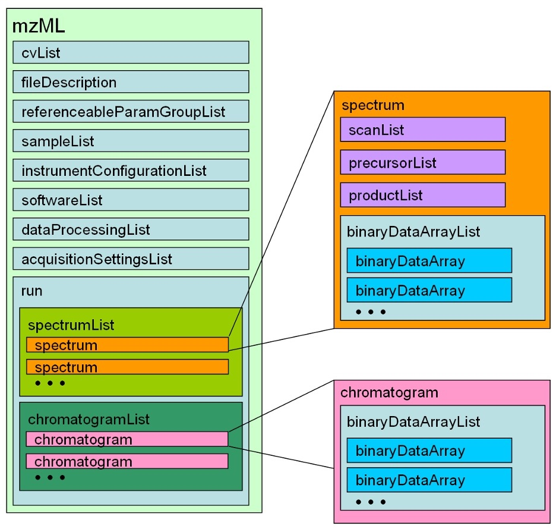
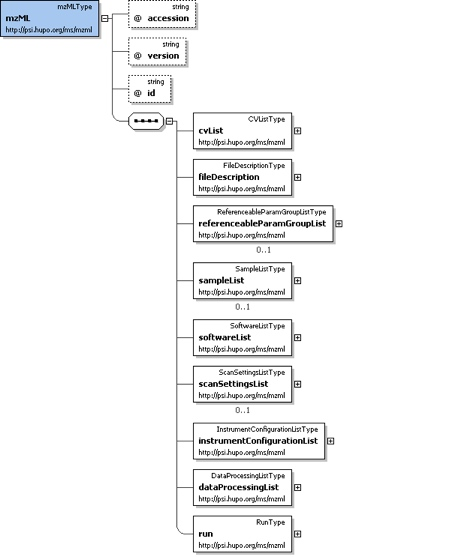
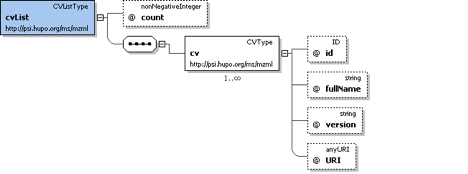
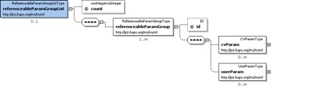

Abstract
The Human Proteome Organization(HUPO) Proteomics Standards Initiative(PSI) defines community standards for data representation in proteomics to facilitate data comparison, exchange and verification.
The Mass Spectrometry Standards Working Group (PSI-MS WG) develops standards for describing the results of a mass spectrometric analysis.
mzML presents information to the mass spectrometry community about th emodelling in XML of the experimental results obtained by mass spectrometric analysis of biomolecular compounds.
Model in XML Schema

Element <mzML>
Root element for PSI mzML schema, which is intended to capture the use of a mass spectrometer, the data generated and the initial processing of that data.

<mzML xmlns="http://psi.hupo.org/ms/mzml" xmlns:xsi="http://www.w3.org/2001/XMLSchema-instance" xsi:schemaLocation="http://psi.hupo.org/ms/mzml http://psidev.info/files/ms/mzML/xsd/mzML1.1.0.xsd" id="20190805_Pincus_6-18" version="1.1.0">
The following is the subelement names:
cvList
Container for one or more contolled vocabulary definitions.

One of the <cv> elements in this list MUST be the PSI MS controlled vocabulary. All <cvParam> elements in the document MUST refer to one of the <cv> elements in this list.
<cvList count="2">
<cv id="MS" fullName="Proteomics Standards Initiative Mass Spectrometry Ontology" version="1.18.2" URI="http://psidev.cvs.sourceforge.net/*checkout*/psidev/psi/psi-ms/mzML/controlledVocabulary/psi-ms.obo"/>
<cv id="UO" fullName="Unit Ontology" version="04:03:2009" URI="http://obo.cvs.sourceforge.net/*checkout*/obo/obo/ontology/phenotype/unit.obo"/>
</cvList>
fileDescription
Information pertaining to h eentire mzML file is stored here.
The following is the subelement names:
- fileContent: This summarizes the different types of spectra that can be expected in the file. Expected to aid processing software in skipping files that do not contain appropriate spectrum typrs for it.
- sourceFileList: List and descriptions of the source files this mzML document was generated or derived from.
- contact:
referenceParamGroupList
Container for a list of referenceableParamGroups.
A collection of CVParam and UserParam elements that can be referenced from elewhere in this mzMl document by using the 'paramGroupRef' element in that location to reference the 'id' attribute vaue of this element.

<referenceableParamGroupList count="3">
<referenceableParamGroup id="CommonInstrumentParams">
<cvParam cvRef="MS" accession="MS:1000448" name="LTQ FT" value=""/>
<cvParam cvRef="MS" accession="MS:1000529" name="instrument serial number" value="SN06061F"/>
</referenceableParamGroup>
<referenceableParamGroup id="InstrumentCustomization">
<cvParam cvRef="MS" accession="MS:1000032" name="customization" value="none"/>
...
</referenceableParamGroupList>
sampleList
List and descriptions of samples.
<sampleList count="2">
<sample id="sample1" name="Sample 1">
</sample>
<sample id="sample2" name="Sample 2">
</sample>
</sampleList>
softwareList
List and descriptioins of software used to acquire and/or process the data in this mzML file.
<softwareList count="2">
<software id="MassHunter" version="8.0">
<cvParam cvRef="MS" accession="MS:1000678" name="MassHunter Data Acquisition" value=""/>
</software>
<software id="pwiz" version="3.0.19161">
<cvParam cvRef="MS" accession="MS:1000615" name="ProteoWizard software" value=""/>
</software>
</softwareList>
scanSettingList
List with the descriptions of th eacquisition settings applied prior to the start of data acquisition.
instrumentConfigurationList
List and descriptions of instrument configurations. At least one instrument configuration MUST be specified, even if it is only to specify that the instrument is unknown.
<instrumentConfigurationList count="1">
<instrumentConfiguration id="IC1">
<referenceableParamGroupRef ref="CommonInstrumentParams"/>
<componentList count="6">
<source order="1">
<cvParam cvRef="MS" accession="MS:1000397" name="microelectrospray" value=""/>
<cvParam cvRef="MS" accession="MS:1000057" name="electrospray inlet" value=""/>
</source>
<analyzer order="2">
<cvParam cvRef="MS" accession="MS:1000081" name="quadrupole" value=""/>
</analyzer>
<analyzer order="3">
<cvParam cvRef="MS" accession="MS:1000081" name="quadrupole" value=""/>
</analyzer>
<analyzer order="4">
<cvParam cvRef="MS" accession="MS:1000084" name="time-of-flight" value=""/>
</analyzer>
<detector order="5">
<cvParam cvRef="MS" accession="MS:1000114" name="microchannel plate detector" value=""/>
</detector>
<detector order="6">
<cvParam cvRef="MS" accession="MS:1000116" name="photomultiplier" value=""/>
</detector>
</componentList>
<softwareRef ref="MassHunter"/>
</instrumentConfiguration>
</instrumentConfigurationList>
dataProcessingList
List and descriptions of data processingapplied to this data.
<dataProcessingList count="2">
<dataProcessing id="MIAPE_example">
<processingMethod order="1" softwareRef="pwiz">
<cvParam cvRef="MS" accession="MS:1000033" name="deisotoping" value=""/>
<cvParam cvRef="MS" accession="MS:1000034" name="charge deconvolution" value=""/>
<cvParam cvRef="MS" accession="MS:1000035" name="peak picking" value=""/>
<cvParam cvRef="MS" accession="MS:1000592" name="smoothing" value=""/>
...
</dataProcessingList>
run
A run in mzML should correspond to a single, consecutive and coherent set of scans on an instrument.
The following is the subelement names:
- spectrumList
- chromatogramList
- referenceableParamGroupRef
- cvParam
- userParam